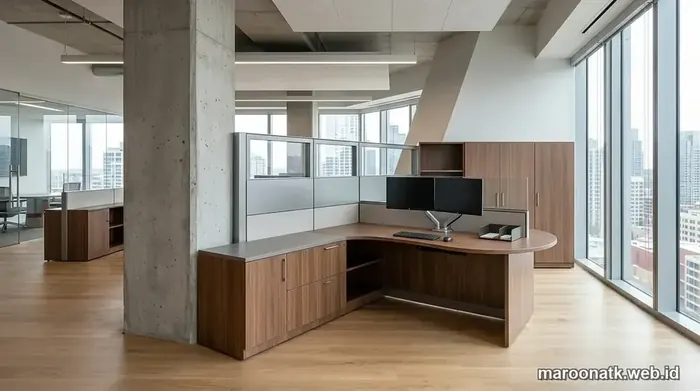

Mengapa Pemilihan Material Menjadi Kunci Keberhasilan Pengadaan Furniture Kantor?
Keberhasilan proyek pengadaan furniture kantor harus ditentukan oleh kesesuaian beban fungsional, ketahanan kelembapan ruangan AC, kualitas finishing HPL, dan kekuatan struktur rangka baja, bukan semata-mata harga beli awal. Memilih material inti seperti plywood multipleks 18mm atau MFC grade E1 dengan edge banding PVC 2mm menjamin umur pakai 7–10 tahun bebas melengkung.
Bagi tim purchasing dan pengelola fasilitas kantor (Facility/GA), membeli furniture kerja bukan sekadar memilih desain yang terlihat cantik di katalog. Tantangan terbesar dalam pengadaan furniture kantor adalah memastikan barang yang dibeli tahan digunakan 8–10 jam sehari oleh ratusan staf selama bertahun-tahun tanpa mengalami penurunan fungsi.
Keluhan klasik seperti daun meja yang melengkung (sagging) di bagian tengah setelah ditaruh dua monitor komputer, lapisan pinggiran meja yang mengelupas, pintu lemari yang anjlok, atau papan serbuk kayu yang mekar akibat terkena tetesan air minum sering kali berakar pada pemilihan material yang keliru. Setiap jenis material memiliki karakteristik unik, kelebihan, dan batas toleransi beban yang berbeda. Memahami aspek teknis ini akan membantu perusahaan mengoptimalkan anggaran belanja modal (CapEx) menjadi aset produktif bernilai tinggi.

SOP Pengadaan Furniture Kantor B2B: Dari Survey Hingga BAST
Tahapan standar operasional pengadaan furniture korporat agar transparan dan sesuai spesifikasi tender.
Mengenal Jenis-Jenis Material Inti Furniture Kantor
Di industri furniture modern, material kayu olahan (engineered wood) menjadi pilihan utama karena stabilitas dimensi dan efisiensi biayanya. Berikut perbandingan karakteristik masing-masing jenis:
1. Particle Board (Papan Serbuk Kayu)
Particle board dibuat dari serbuk gergaji dan potongan kayu kecil yang dipadatkan dengan perekat sintetis di bawah tekanan panas tinggi.
- Kelebihan: Bobot ringan, biaya produksi paling ekonomis, ramah lingkungan karena memanfaatkan limbah kayu.
- Kekurangan: Daya ikat sekrup lebih rendah, rentan patah jika menahan beban bentang panjang tanpa penguat, sangat sensitif terhadap air jika lapisan laminasi bocor.
- Aplikasi Terbaik: Partisi sekat panel workstation (acoustic fabric screen), panel modesty (penutup bawah meja), dan laci mobile pedestal ringan.
2. MDF (Medium Density Fiberboard)
MDF tersusun dari serat kayu halus dengan kerapatan medium yang menghasilkan papan sangat padat dan memiliki permukaan sangat halus serta presisi.
- Kelebihan: Permukaan rata sempurna tanpa rongga, sangat ideal untuk finishing cat duco, laminasi membran vakum, atau panel berprofil ukiran modern.
- Kekurangan: Bobot lebih berat, kurang tahan air jika dibandingkan multipleks, membutuhkan sekrup khusus saat dirakit ulang (knockdown).
- Aplikasi Terbaik: Pintu kabinet arsip bermotif, panel dinding dekoratif ruang meeting, dan meja resepsionis berdesain lengkung.
3. Plywood / Multipleks (Kayu Lapis)
Plywood terbuat dari beberapa lapisan lembaran kayu tipis (veneer) yang ditumpuk bersilangan seratnya (cross-grain) dan direkatkan di bawah tekanan ekstrem.
- Kelebihan: Kekuatan mekanis dan struktural sangat tinggi, daya tahan superior terhadap lendutan beban berat, daya cengkeram sekrup luar biasa, dan tahan kelembapan ruangan ber-AC.
- Kekurangan: Biaya material lebih tinggi dibanding particle board dan MDF.
- Aplikasi Terbaik: Daun meja kerja (top table workstation), meja rapat bentang lebar (meeting table), dan bodi lemari arsip dokumen heavy-duty.

Konstruksi meja kerja kokoh menggabungkan lapisan HPL tahan gores, edge banding PVC mesin 2mm, dan rangka baja hollow dengan las presisi.
4. Kayu Solid, Logam Baja & Kaca Tempered
- Solid Wood (Kayu Utuh): Memberikan kesan prestisius dan mewah, umumnya digunakan untuk meja direktur utama (Executive Suite). Memerlukan perawatan kelembapan rutin agar tidak menyusut atau retak.
- Rangka Logam Baja (Hollow Steel): Baja cold-rolled dengan finishing powder coating tahan karat memberikan stabilitas maksimal pada kaki workstation modular dan lemari arsip baja (filing cabinet).
- Kaca Tempered: Memberikan estetika modern dan transparansi pada partisi sekat meja atau pintu lemari pajang piala dan sertifikat.

Estimasi Harga Paket Furniture Kantor Workstation Jakarta
Rincian estimasi biaya pengadaan meja kerja staf 4-seater, 6-seater, dan kursi ergonomis untuk korporasi.
Tabel Komparasi Karakteristik Material Furniture Kantor
Gunakan tabel perbandingan teknis berikut sebagai panduan penyusunan Kerangka Acuan Kerja (KAK) dan Rencana Kerja Syarat (RKS) pengadaan:
| Material Dasar | Karakteristik Fisik | Kelebihan Utama | Kekurangan / Batasan | Paling Cocok Untuk |
|---|---|---|---|---|
| Particle Board (MFC) | Kepadatan serbuk kayu 600–700 kg/m³, bobot ringan | Sangat hemat biaya, permukaan melamin rapi | Rentan mekar jika kena rembesan air, daya lentur terbatas | Partisi sekat, modesty panel, kabinet arsip ringan |
| MDF (Medium Density) | Serat homogen halus 700–800 kg/m³, tepian mudah dibentuk | Permukaan sangat rata, bisa diprofil kurva elegan | Bobot cukup berat, mudah patah di sudut bila terbentur | Pintu lemari dekoratif, backdrop lobi, panel dinding |
| Plywood / Multipleks | Lapisan veneer kayu silang 18–25mm, daya ikat tinggi | Sangat kuat menahan beban, tahan lembap, anti-melengkung | Harga lebih tinggi dari partikel/MDF, butuh finishing tepi rapi | Top table meja staf, meja meeting, credenza utama |
| Solid Wood (Kayu Utuh) | Kayu jati/mahoni asli bertekstur urat alami premium | Tampilan mewah prestisius, masa pakai puluhan tahun | Biaya investasi tinggi, bobot sangat berat, sensitif suhu | Meja Direktur Utama, ruang VIP Boardroom |
| Rangka Baja (Hollow Steel) | Pipa baja 1.2–1.5mm dengan finishing powder coating | Struktur rigid anti-goyang, anti rayap, tahan benturan keras | Pilihan warna terbatas pada solid coating (hitam/putih/abu) | Kaki meja workstation, lemari arsip baja, rak server |

Mengapa Custom Furniture Kantor Lebih Hemat Dibanding Siap Pakai
Kalkulasi penghematan ruang sewa gedung dan durabilitas investasi melalui custom furniture presisi.
Peran Lapisan Finishing dan Hardware Penunjang Durabilitas
Selain material inti kayu, ketahanan furniture kantor sangat dipengaruhi oleh dua komponen pelindung utama:
1. High Pressure Laminate (HPL) & Edge Banding PVC
HPL adalah lembaran laminasi bertekanan tinggi yang dilapisi resin melamin bening. Lapisan ini membuat permukaan meja tahan terhadap goresan pulpen, panas cangkir kopi, dan cairan kimia pembersih meja. Untuk mencegah air merembes ke papan inti melalui sambungan pinggir, pastikan vendor menerapkan PVC Edge Banding tebal 2mm yang ditempel menggunakan mesin otomatis berteknologi hot-melt polyurethane (PUR).
2. Hardware Engsel Soft-Close & Rel Laci Ball Bearing
Kenyamanan dan keawetan laci meja staf ditentukan oleh kualitas rel laci baja dengan mekanisme bantalan peluru (ball bearing double-extension) yang mampu menahan beban tumpukan berkas hingga 30 kg tanpa macet. Pada pintu lemari arsip, penggunaan engsel hidrolik soft-close mencegah benturan keras saat ditutup yang dapat merusak sekrup dan engsel.
Konsultasi Spesifikasi Material Furniture Kantor Anda
Dapatkan Sample Board Material, Gambar 2D/3D Layout & Penawaran B2B Resmi
Hubungi spesialis interior dan pengadaan di Tentang MAROON ATK untuk rekomendasi material terbaik sesuai anggaran dan kebutuhan kantor Anda.
Kesimpulan: Investasi Cerdas Berdasarkan Nilai Guna Jangka Panjang
Rangkuman Panduan Pemilihan Material
Memilih material furniture kantor harus mengedepankan pertimbangan total cost of ownership (TCO) agar aset bertahan lama dan mendukung produktivitas kerja.
- Top Table Meja Staf: Wajib gunakan minimal Plywood/Multipleks 18–25mm lapis HPL dengan PVC edge banding 2mm.
- Kaki & Struktur Penopang: Kombinasikan dengan rangka baja hollow powder-coated dan balok penyangga under-desk beam.
- Mitra Pengadaan Bergaransi: Pastikan penyedia furniture memberikan jaminan kualitas pengerjaan dan ketersediaan suku cadang hardware.
Pertanyaan Umum (FAQ) Material Furniture Kantor
Kombinasi plywood (multipleks tebal 18mm) dengan lapisan High Pressure Laminate (HPL) dan rangka kaki hollow steel merupakan standar terbaik untuk meja kerja staf dan meja rapat karena tahan beban berat, tahan lembap AC, anti gores, dan tidak mudah melengkung.
Tidak selalu. Particle board grade E1 dengan laminasi melamin tebal (MFC) dan edge banding PVC 2mm yang tersegel rapat sangat ekonomis dan fungsional untuk partisi sekat atau kabinet arsip ringan. Namun, tidak disarankan untuk meja bentang panjang tanpa rangka penopang baja atau area yang rentan tumpahan cairan.
MDF terbuat dari serat kayu halus yang dipadatkan dengan permukaan sangat rata (cocok untuk finishing cat duco atau profil kurva), namun rentan melar jika terkena air. Plywood tersusun dari lapisan lembaran kayu solid bersilangan, memberikan kekuatan struktural dan daya cengkeram sekrup yang jauh lebih kokoh serta tahan kelembapan tinggi.
Gunakan panel top table dengan ketebalan minimal 25mm, pasang balok penguat rangka baja (under-desk support beam) di bawah bentang meja yang melebihi 140 cm, dan pilih material inti multipleks berkualitas tinggi.

Arby Ardiansyah
Praktisi pengadaan B2B berpengalaman lebih dari 5 tahun dalam tata kelola rantai pasok perlengkapan kantor, audit kontrak pengadaan korporat, dan standardisasi efisiensi OpEx operasional di Indonesia.